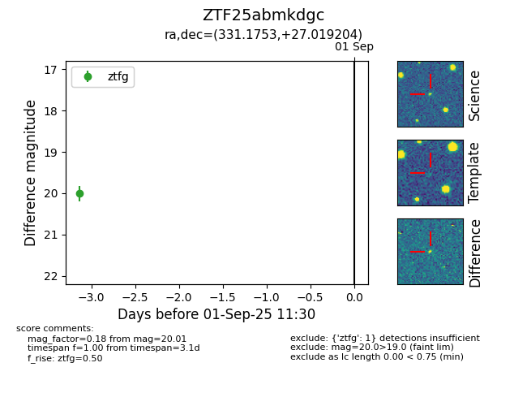

FINK: ZTF25abmkdgc
Lasair: ZTF25abmkdgc
ALeRCE: ZTF25abmkdgc
ZTF25abmkdgc (ztf,fink)
equatorial (ra, dec) = (331.1753,+27.01920)
galactic (l, b) = (82.9974,-22.64182)

last ztfg=20.13, ztfr=20.15
3 ztfg, 2 ztfr detections